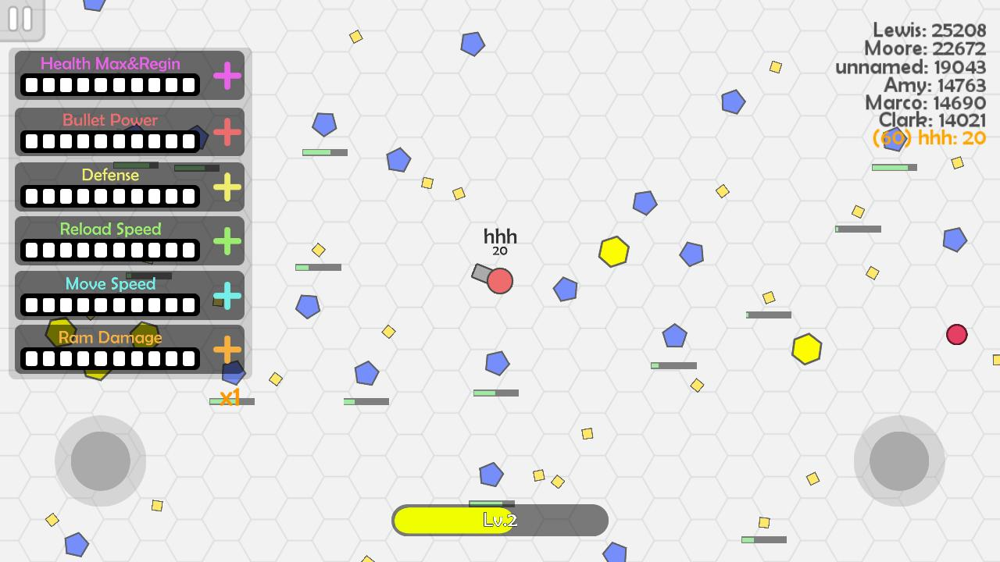
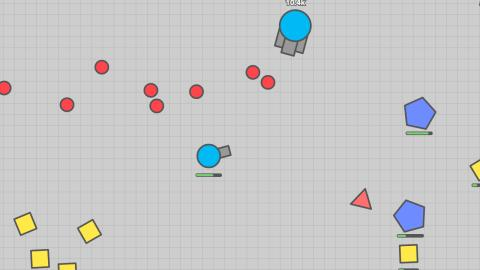
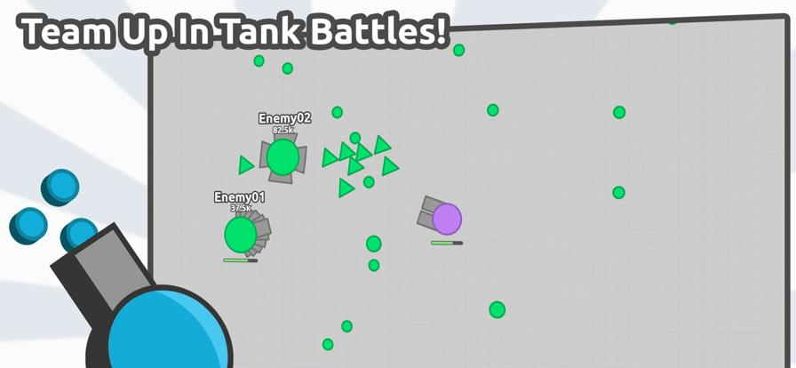
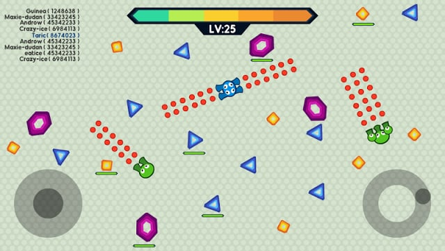
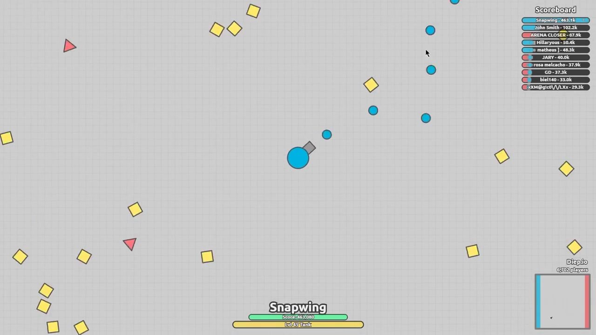

Finding the right build is crucial for success in Diep.io. With hundreds of upgrade combinations and dozens of tank classes, knowing the optimal path can be overwhelming. This comprehensive guide provides proven build configurations for every major tank class, complete with upgrade priorities and playstyle recommendations.
📖 Build Fundamentals

Understanding Stats
- Bullet Damage - Damage per bullet hit
- Bullet Speed - How fast projectiles travel
- Reload - Fire rate between shots
- Health - Total HP and regeneration
- Body Damage - Damage from ramming
- Movement Speed - Tank movement speed
The Diminishing Returns Problem
Each stat has 7 upgrade levels (0-7). Early levels provide large increases, while later levels offer minimal gains. Distribute points wisely rather than maxing single stats.
Build Archetypes
- Glass Cannons - High damage, low health
- Tanks - High health and body damage
- Assassins - Balanced speed and damage
- Support - Utility-focused builds
🔫 Bullet Class Builds

Sniper Build
Playstyle: Long-range precision attacks from safety
- Bullet Speed: 7
- Reload: 5-6
- Movement Speed: 3-4
- Health: 2-3
Stay at maximum range and pick off enemies before they can retaliate. Patient players thrive with this build.
Machine Gun Build
Playstyle: Suppressive fire and area denial
- Reload: 7
- Bullet Damage: 4-5
- Bullet Speed: 3-4
- Movement Speed: 3
Overwhelm opponents with sheer volume of fire. Effective against drones and close-range targets.
Destroyer Build
Playstyle: Powerful projectiles with moderate mobility
- Bullet Damage: 6-7
- Movement Speed: 4-5
- Bullet Speed: 3-4
- Health: 2-3
Land devastating shots that delete smaller tanks. Requires accuracy but rewards skilled players.
Destroyer builds sacrifice fire rate for damage. Position carefully—you can't afford missed shots in close combat.
💪 Rammer Builds

Smasher Build
Playstyle: Aggressive ramming with heavy armor
- Body Damage: 7
- Movement Speed: 5-6
- Health: 5-6
- Max Health: 4-5
Become an unstoppable force. Ram through bullets and enemies alike. Perfect for aggressive players.
Booster/Smasher Hybrid
Playstyle: Fast ramming with good durability
- Movement Speed: 7
- Body Damage: 5-6
- Health: 4-5
- Bullet Damage: 1-2
Balance speed with ramming power. Can fight and escape equally well.
🤖 Drone Class Builds

Overlord Build
Playstyle: Control drone army for offense and defense
- Drone Damage: 5-6
- Drone Health: 4-5
- Drone Speed: 4-5
- Movement Speed: 3-4
Master multi-drone control. Position drones strategically to block bullets while maintaining pressure on enemies.
Necromancer Build
Playstyle: Spawn drones from fallen enemies
- Drone Health: 6-7
- Drone Count: 4-5
- Movement Speed: 3-4
- Max Health: 3-4
Build a large army by killing enemies and converting their squares. Dominant in shape-heavy areas.
Manager Build
Playstyle: Capture and control enemy drones
- Drone Speed: 6-7
- Drone Health: 4-5
- Movement Speed: 3
- Drone Damage: 3-4
Steal enemy drones and build overwhelming numbers. Perfect for patient, tactical players.
⚡ Hybrid Builds

Tri-Trapper Build
Playstyle: Defensive trap deployment with counter-attack
- Trap Damage: 5-6
- Reload: 5
- Bullet Damage: 4-5
- Movement Speed: 3-4
Create defensive perimeters while maintaining offensive capability. Great for controlling space.
Auto-5 Build
Playstyle: Autonomous multi-directional fire
- Reload: 6-7
- Bullet Damage: 4-5
- Bullet Speed: 3-4
- Movement Speed: 3
Five turrets fire automatically. Minimal aiming required, maximum suppression.
📈 Leveling Strategy

Early Game (Levels 1-15)
Focus on survivability: Movement Speed and Health. This ensures you survive encounters while learning the game.
Mid Game (Levels 15-30)
Shift focus to your primary damage source. Bullet classes should prioritize Bullet Damage and Reload. Rammers should max Body Damage.
Late Game (Levels 30+)
Fine-tune your build based on your playstyle and needs. If dying to bullets, add Health. If missing shots, increase Bullet Speed.
💎 Pro Tips

Adapt builds to your opponents. If facing many snipers, add Movement Speed. If fighting rammers, increase Health.
Don't spread stats too thin. Focus on 2-3 categories. Jacks-of-all-trades lose to specialists in every category.
Practice with simpler builds first. Master Twin or Medium Tank before attempting complex drone classes.
Use shapes as shields. Position shapes between you and enemy fire. Destroy them at critical moments to block bullets.
❓ Frequently Asked Questions
What are the best beginner builds?
Twin with balanced stats (Health 4, Movement 4, Bullet Damage 4, Reload 4) is excellent for learning. It offers decent damage and survivability without complex mechanics.
How do I counter Overlord drones?
Use high Bullet Speed builds like Sniper or Destroyer. Keep distance and focus fire on individual drones. When drones thin out, rush the Overlord.
What's the most powerful class in Diep.io?
No single class dominates all matchups. Overlord excels against bullets but struggles against Swarm classes. Balance, counter-play, and player skill matter most.
Should I upgrade Bullet Speed or Bullet Damage first?
Bullet Speed first—faster bullets are harder to dodge and ensure more hits. Then focus on Bullet Damage for kill power.
What's the maximum stats before dimishing returns?
Levels 5-6 offer the best balance of investment to reward. Going from 6 to 7 costs the same but provides minimal benefit. Prioritize reaching 5-6 across categories over maxing single stats.
📝 Conclusion
The perfect build depends on your playstyle and skill level. Use this guide as a starting point, then experiment to find what works best for you. Remember: even optimal builds fail without proper positioning and game sense.
Ready to dominate? For foundational strategies, check out our Diep.io Complete Guide. Practice these builds in-game and refine your approach!
Last updated: January 17, 2024
Written by the iogameguide.com team